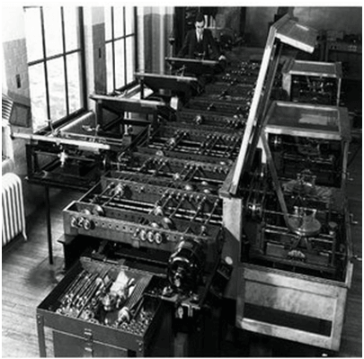
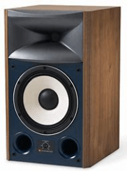
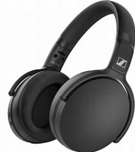
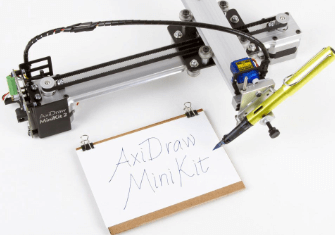
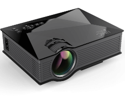
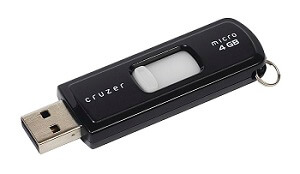

A computer is a programmable electronic device that accepts raw data as input and processes it with a set of instructions (a program) to produce the result as output. It renders output just after performing mathematical and logical operations and can save the output for future use. It can process numerical as well as non-numerical calculations. The term "computer" is derived from the Latin word "computare" which means to calculate.
A computer is designed to execute applications and provides a variety of solutions through integrated hardware and software components. It works with the help of programs and represents the decimal numbers through a string of binary digits. It also has a memory that stores the data, programs, and result of processing. The components of a computer such as machinery that includes wires, transistors, circuits, hard disk are called hardware. Whereas, the programs and data are called software.
It is believed that the Analytical Engine was the first computer which was invented by Charles Babbage in 1837. It used punch cards as read-only memory. Charles Babbage is also known as the father of the computer.
It is a single-user computer which has less speed and storage capacity than the other types. It uses a microprocessor as a CPU. The first microcomputer was built with 8-bit microprocessor chips. The common examples of microcomputers include laptops, desktop computers, personal digital assistant (PDA), tablets, and smartphones. Microcomputers are generally designed and developed for general usage like browsing, searching for information, internet, MS Office, social media, etc.
Mini-computers are also known as "Midrange Computers." They are not designed for a single. They are multi-user computers designed to support multiple users simultaneously. So, they are generally used by small businesses and firms. Individual departments of a company use these computers for specific purposes. For example, the admission department of a University can use a Mini-computer for monitoring the admission process.
It is also a multi-user computer capable of supporting thousands of users simultaneously. They are used by large firms and government organizations to run their business operations as they can store and process large amounts of data. For example, Banks, universities, and insurance companies use mainframe computers to store the data of their customers, students, and policyholders, respectively.
Super-computers are the fastest and most expensive computers among all types of computers. They have huge storage capacities and computing speeds and thus can perform millions of instructions per second. The super-computers are task-specific and thus used for specialized applications such as large-scale numerical problems in scientific and engineering disciplines including applications in electronics, petroleum engineering, weather forecasting, medicine, space research and more. For example, NASA uses supercomputers for launching space satellites and monitoring and controlling them for space exploration.
It is a single-user computer. Although it is like a personal computer, it has a more powerful microprocessor and a higher-quality monitor than a microcomputer. In terms of storage capacity and speed, it comes between a personal computer and minicomputer. Work stations are generally used for specialized applications such as desktop publishing, software development, and engineering designs.
Increases your productivity:A computer increases your productivity. For example, after having a basic understanding of a word processor, you can create, edit, store, and print the documents easily and quickly.
Connects to the Internet: It connects you to the internet that allows you to send emails, browse content, gain information, use social media platforms, and more. By connecting to the internet, you can also connect to your long-distance friends and family members.
Storage: A computer allows you to store a large amount of information, e.g., you can store your projects, ebooks, documents, movies, pictures, songs, and more.
Organized Data and Information: It not only allows you to store data but also enables you to organize your data. For example, you can create different folders to store different data and information and thus can search for information easily and quickly.
Improves your abilities: It helps write good English if you are not good at spelling and grammar. Similarly, if you are not good at math, and don't have a great memory, you can use a computer to perform calculations and store the results.
Assist the physically challenged: It can be used to help the physically challenged, e.g., Stephen Hawking, who was not able to speak used computer to speak. It also can be used to help blind people by installing special software to read what is on the screen.
Keeps you entertained: You can use the computer to listen to songs, watch movies, play games and more.
The computer has become a part of our life. There are plenty of things that we do in a day are dependent on a computer. Some of the common examples are as follows:
1.ATM: While withdrawing cash from an ATM, you are using a computer that enables the ATM to take instructions and dispense cash accordingly.
2.Digital currency: A computer keeps a record of your transactions and balance in your account and the money deposited in your account in a bank is stored as a digital record or digital currency.
3.Trading: Stock markets use computers for day to day trading. There are many advanced algorithms based on computers that handle trading without involving humans.
4.Smartphone: The smartphone that we use throughout the day for calling, texting, browsing is itself a computer.
5.VoIP: All voice over IP communication (VoIP) is handled and done by computers.
The first counting device was used by the primitive people. They used sticks, stones and bones as counting tools. As human mind and technology improved with time more computing devices were developed. Some of the popular computing devices starting with the first to recent ones are described below;
The history of computer begins with the birth of abacus which is believed to be the first computer. It is said that Chinese invented Abacus around 4,000 years ago.
It was a wooden rack which has metal rods with beads mounted on them. The beads were moved by the abacus operator according to some rules to perform arithmetic calculations. Abacus is still used in some countries like China, Russia and Japan. An image of this tool is shown below;

It was a manually-operated calculating device which was invented by John Napier (1550-1617) of Merchiston. In this calculating tool, he used 9 different ivory strips or bones marked with numbers to multiply and divide. So, the tool became known as "Napier's Bones. It was also the first machine to use the decimal point.

Pascaline is also known as Arithmetic Machine or Adding Machine. It was invented between 1642 and 1644 by a French mathematician-philosopher Biaise Pascal. It is believed that it was the first mechanical and automatic calculator.
Pascal invented this machine to help his father, a tax accountant. It could only perform addition and subtraction. It was a wooden box with a series of gears and wheels. When a wheel is rotated one revolution, it rotates the neighboring wheel. A series of windows is given on the top of the wheels to read the totals. An image of this tool is shown below;

It was developed by a German mathematician-philosopher Gottfried Wilhelm Leibnitz in 1673. He improved Pascal's invention to develop this machine. It was a digital mechanical calculator which was called the stepped reckoner as instead of gears it was made of fluted drums. See the following image;

In the early 1820s, it was designed by Charles Babbage who is known as "Father of Modern Computer". It was a mechanical computer which could perform simple calculations. It was a steam driven calculating machine designed to solve tables of numbers like logarithm tables.

This calculating machine was also developed by Charles Babbage in 1830. It was a mechanical computer that used punch-cards as input. It was capable of solving any mathematical problem and storing information as a permanent memory.

It was invented in 1890, by Herman Hollerith, an American statistician. It was a mechanical tabulator based on punch cards. It could tabulate statistics and record or sort data or information. This machine was used in the 1890 U.S. Census. Hollerith also started the Hollerith?s Tabulating Machine Company which later became International Business Machine (IBM) in 1924.

It was the first electronic computer introduced in the United States in 1930. It was an analog device invented by Vannevar Bush. This machine has vacuum tubes to switch electrical signals to perform calculations. It could do 25 calculations in few minutes.

The next major changes in the history of computer began in 1937 when Howard Aiken planned to develop a machine that could perform calculations involving large numbers. In 1944, Mark I computer was built as a partnership between IBM and Harvard. It was the first programmable digital computer.
A generation of computers refers to the specific improvements in computer technology with time. In 1946, electronic pathways called circuits were developed to perform the counting. It replaced the gears and other mechanical parts used for counting in previous computing machines.
In each new generation, the circuits became smaller and more advanced than the previous generation circuits. The miniaturization helped increase the speed, memory and power of computers. There are five generations of computers which are described below;
The first generation (1946-1959) computers were slow, huge and expensive. In these computers, vacuum tubes were used as the basic components of CPU and memory. These computers were mainly depended on batch operating system and punch cards. Magnetic tape and paper tape were used as output and input devices in this generation;
Some of the popular first generation computers are;
The second generation (1959-1965) was the era of the transistor computers. These computers used transistors which were cheap, compact and consuming less power; it made transistor computers faster than the first generation computers.
In this generation, magnetic cores were used as the primary memory and magnetic disc and tapes were used as the secondary storage.
Assembly language and programming languages like COBOL and FORTRAN, and Batch processing and multiprogramming operating systems were used in these computers.
Some of the popular second generation computers are;
The third generation computers used integrated circuits (ICs) instead of transistors. A single IC can pack huge number of transistors which increased the power of a computer and reduced the cost. The computers also became more reliable, efficient and smaller in size. These generation computers used remote processing, time-sharing, multi programming as operating system. Also, the high-level programming languages like FORTRON-II TO IV, COBOL, PASCAL PL/1, ALGOL-68 were used in this generation.
Some of the popular third generation computers are;
The fourth generation (1971-1980) computers used very large scale integrated (VLSI) circuits; a chip containing millions of transistors and other circuit elements. These chips made this generation computers more compact, powerful, fast and affordable. These generation computers used real time, time sharing and distributed operating system. The programming languages like C, C++, DBASE were also used in this generation.
Some of the popular fourth generation computers are;
In fifth generation (1980-till date) computers, the VLSI technology was replaced with ULSI (Ultra Large Scale Integration). It made possible the production of microprocessor chips with ten million electronic components. This generation computers used parallel processing hardware and AI (Artificial Intelligence) software. The programming languages used in this generation were C, C++, Java, .Net, etc.
Some of the popular fifth generation computers are;
We can categorize computer in two ways: on the basis of data handling capabilities and size.
On the basis of data handling capabilities, the computer is of three types:
Analogue computers are designed to process analogue data. Analogue data is continuous data that changes continuously and cannot have discrete values. We can say that analogue computers are used where we don't need exact values always such as speed, temperature, pressure and current.
Analogue computers directly accept the data from the measuring device without first converting it into numbers and codes. They measure the continuous changes in physical quantity and generally render output as a reading on a dial or scale. Speedometer and mercury thermometer are examples of analogue computers.
Slide Rules: It is one of the simplest types of mechanical analogue computers. It was developed to perform basic mathematical calculations. It is made of two rods. To perform the calculation, the hashed rod is slid to line up with the markings on another rod.
Differential Analysers: It was developed to perform differential calculations. It performs integration using wheel-and-disc mechanisms to solve differential calculations.
Castle Clock: It was invented by Al-Jarazi. It was able to save programming instructions. Its height was around 11 feet and it was provided with the display of time, the zodiac, and the solar and lunar orbits. This device also could allow users to set the length of the day as per the current season.
Electronic Analogue Computer: In this type of analogue computer, electrical signals flow through capacitors and resistors to simulate physical phenomena. Here, the mechanical interaction of components does not take place. The voltage of the electrical signal generates the appropriate displays.
Digital computer is designed to perform calculations and logical operations at high speed. It accepts the raw data as input in the form of digits or binary numbers (0 and 1) and processes it with programs stored in its memory to produce the output. All modern computers like laptops, desktops including smartphones that we use at home or office are digital computers.
It allows you to store a large amount of information and to retrieve it easily whenever you need it.
You can easily add new features to digital systems more easily.
Different applications can be used in digital systems just by changing the program without making any changes in hardware
The cost of hardware is less due to the advancement in the IC technology.
It offers high speed as the data is processed digitally.
It is highly reliable as it uses error correction codes.
Reproducibility of results is higher as the output is not affected by noise, temperature, humidity, and other properties of its components.
Hybrid computer has features of both analogue and digital computer. It is fast like an analogue computer and has memory and accuracy like digital computers. It can process both continuous and discrete data. It accepts analogue signals and convert them into digital form before processing. So, it is widely used in specialized applications where both analogue and digital data is processed. For example, a processor is used in petrol pumps that converts the measurements of fuel flow into quantity and price. Similarly, they are used in airplanes, hospitals, and scientific applications.
Its computing speed is very high due to the all-parallel configuration of the analogue subsystem.
It produces precise and quick results that are more accurate and useful.
It has the ability to solve and manage big equation in real-time.
It helps in the on-line data processing.
On the basis of size, the computer can be of five types:
Supercomputers are the biggest and fastest computers. They are designed to process huge amount of data. A supercomputer can process trillions of instructions in a second. It has thousands of interconnected processors.
Supercomputers are particularly used in scientific and engineering applications such as weather forecasting, scientific simulations and nuclear energy research. The first supercomputer was developed by Roger Cray in 1976.
Characteristics or applications of supercomputers:
It has the ability to decrypt your password to enhance protection for security reasons.
It produces excellent results in animations.
It is used for virtual testing of nuclear weapons and critical medical tests.
It can study and understand climate patterns and forecast weather conditions. It can run in NOAA's system (National Oceanic and Atmospheric Administration) that can execute any type of simple and logical data.
It helps in designing the flight simulators for pilots at the beginner level for their training.
It helps in extracting useful information from data storage centres or cloud system. For example, in insurance companies.
It has played a vital role in managing the online currency world such as stock market and bitcoin.
It helps in the diagnosis of various critical diseases and in producing accurate results in brain injuries, strokes, etc.
It helps in scientific research areas by accurately analysing data obtained from exploring the solar system, satellites, and movement of Earth.
It also used in a smog control system where it predicts the level of fog and other pollutants in the atmosphere.
Mainframe computers are designed to support hundreds or thousands of users simultaneously. They can support multiple programs at the same time. It means they can execute different processes simultaneously. These features of mainframe computers make them ideal for big organizations like banking and telecom sectors, which need to manage and process high volume of data.
Mainframe computers are designed to support hundreds or thousands of users simultaneously. They can support multiple programs at the same time. It means they can execute different processes simultaneously. These features of mainframe computers make them ideal for big organizations like banking and telecom sectors, which need to manage and process a high volume of data that requires integer operations such as indexing, comparisons, etc.
It can process huge amount of data, e.g. millions of transactions in a second in the banking sector.
It has a very long life. It can run smoothly for up to 50 years after proper installation.
It gives excellent performance with large scale memory management.
It has the ability to share or distribute its workload among other processors and input/output terminals.
There are fewer chances of error or bugs during processing in mainframe computers. If any error occurs it can fix it quickly without affecting the performance.
It has the ability to protect the stored data and other ongoing exchange of information and data.
In health care, it enabled hospitals to maintain a record of their millions of patients in order to contact them for treatment or related to their appointment, medicine updates or disease updates.
In the field of defence, it allows the defence departments to share a large amount of sensitive information with other branches of defence.
In the field of education, it helps big universities to store, manage and retrieve data related to their courses, admissions, students, teachers, employees and affiliated schools and colleges.
In the retail sector, the retail companies that have a huge customer base and branches use mainframe computers to handle and execute information related to their inventory management, customer management, and huge transactions in a short duration.
It is a midsize multiprocessing computer. It consists of two or more processors and can support 4 to 200 users at one time. Miniframe computers are used in institutes and departments for tasks such as billing, accounting and inventory management. A minicomputer lies between the mainframe and microcomputer as it is smaller than mainframe but larger than a microcomputer.
Process control: It was used for process control in manufacturing. It mainly performs two primary functions that are collecting data and feedback. If any abnormality occurs in the process, it is detected by the minicomputer and necessary adjustments are made accordingly.
Data management: It is an excellent device for small organizations to collect, store and share data. Local hospitals and hotels can use it to maintain the records of their patients and customers respectively.
Communications Portal: It can also play the role of a communication device in larger systems by serving as a portal between a human operator and a central processor or computer.
Workstation is a single user computer that is designed for technical or scientific applications. It has a faster microprocessor, a large amount of RAM and high speed graphic adapters. It generally performs a specific job with great expertise; accordingly, they are of different types such as graphics workstation, music workstation and engineering design workstation.
It is a high-performance computer system designed for a single user for business or professional use.
It has larger storage capacity, better graphics, and more powerful CPU than a personal computer.
It can handle animation, data analysis, CAD, audio and video creation and editing.
Any computer that has the following five features, can be termed as a workstation or can be used as a workstation.
Multiple Processor Cores: It has more processor cores than simple laptops or computers.
ECC RAM: It is provided with Error-correcting code memory that can fix memory errors before they affect the system's performance.
RAID (Redundant Array of Independent Disks): It refers to multiple internal hard drives to store or process data. RAID can be of different types, for example, there can be multiple drives to process data or mirrored drives where if one drive does not work than other starts functioning.
SSD: It is better than conventional hard-disk drives. It does not have moving parts, so the chances of physical failure are very less.
Optimized, Higher end GPU: It reduces the load on CPU. E.g., CPU has to do less work while processing the screen output.
Microcomputer is also known as a personal computer. It is a general-purpose computer that is designed for individual use. It has a microprocessor as a central processing unit, memory, storage area, input unit and output unit. Laptops and desktop computers are examples of microcomputers. They are suitable for personal work that may be making an assignment, watching a movie, or at office for office work.
On the basis of data handling capabilities, the three main types of computers are:
A workstation is a kind of computer that can be used for software development, desktop publishing, and creating engineering applications. Although a modest amount of processing power is present in a workstation, it has relatively good graphical capabilities.
A mainframe is often very expensive and a very large type of computer. These kinds of computers have the potential to support hundreds and even thousands of people in one go. Furthermore, programs can run simultaneously, and concurrent execution is possible in mainframe computers.
The advantages of Analog computers are that it represents the data within the system's range and enables users for real-time computations. These as well carry out the calculations without using transducers. Analog systems come in different types, such as Hybrid computers, Digital computers, Castlerock, Electronic Analog computers, slide rules, and differential analyzers. Each of these has advantages and drawbacks of its own. Students who need a thorough explanation of each can go through these on Javatpoint website.
5. What are slide rules?The simplest analog computer system is the slide. It is used to carry out numerous mathematical computations. These are made up of two rods. The rod slides off with the marking on the other rod when there any calculations are made. In contrast, differential calculations are performed using differential analyzers. These operate using a wheel and disc system. Through Javatpoint, where correct explanations are given that are simple for all pupils to understand, they can learn all the concepts easily.
All logical operations are completed quickly and efficiently by digital computers. They work with digital or binary numbers. One of the numerous benefits of digital computers is that they can store a large amount of data. Digital computers can simply add new functionality. The cost of these computers is quite low, and the data processing is done at high speed. The cost is quite low, and the data processing is done quickly digitally. For further information about the different sorts of computers, students can consult Javatpoint.
The mainframe is a type of computer that can be characterized as an expensive and substantial computer system. This is very powerful as they have the potential to support numerous users at the same time. These also facilitate different program executions. It provides great performance with extensive memory management and has a long lifespan. Another advantage of using a mainframe is that errors are often quite infrequent, but when they do occur, the system automatically corrects them. They also have a wide range of applications.
Digital and analog computers are combined in order to create hybrid computers. Although the accuracy and memory are close to digital computers, the speed is similar to analogue computers. Before the process, these kinds of computers take the analogue signals and transform them into digital signals. These are typically used in specialist applications that combine analog and digital data. Hybrid computers have the capability to resolve complicated problems in real-time and contain a very high speed.
A minicomputer is a multiprocessing computer of medium size. This type of computer has two or more CPUs and can accommodate 4 to 200 users in one go.
Computer Components Input DevicesComputer components are the essential building parts of developing a functional computer system. The components that make up a computer are called computer components. The processor (CPU), memory, and input/output devices are every computer's three main building blocks. Initially computers were primarily used for numerical computations because any information can be numerically encoded. The ability of computers to interpret information for several purposes was quickly recognized.

A computer system's input devices are important because they allow users to enter commands and data. Keyboards, mice, scanners, and microphones are numerous examples of input devices.
 The keyboard is the most commonly utilized input device for inserting text and queries into a computer system.
The keyboard is the most commonly utilized input device for inserting text and queries into a computer system.A computer machine's "brain" is its central processing unit (CPU). It executes the calculations and commands required for functioning of the computer device. The CPU comprises some components: the control unit, the arithmetic logic unit (ALU), and registers.
 The CPU's control unit is a crucial component. It is in charge of reading and decoding instructions from memory. The right part of the CPU receives and executes these instructions from the control unit.
The CPU's control unit is a crucial component. It is in charge of reading and decoding instructions from memory. The right part of the CPU receives and executes these instructions from the control unit.Modern CPUs also have additional features like cache memory, virtualization capability, and a couple of cores in addition to the abovementioned components. A small, quick memory called a cache is used to store data and instructions that are utilized frequently. A single CPU may run numerous operating systems thanks to virtualization capability. The CPU can execute numerous tasks simultaneously thanks to multiple cores, enhancing its performance and multitasking capabilities.
The CPU has direct access to primary memory, sometimes referred to as random access memory (RAM). The data and instructions that are currently being processed are kept in primary memory. The data and instructions are accessed by the CPU from primary memory when a computer programme is running. The information is removed from primary memory once the programme is completed.
 Primary memory is classified into two types: random access memory (RAM) and read-only memory (ROM).
Primary memory is classified into two types: random access memory (RAM) and read-only memory (ROM).RAM is the most common form of primary memory and is used to store data and instructions that the CPU wishes to access frequently. RAM is volatile, which means that its contents are lost when the computer is turned off. But RAM can be effortlessly and quickly written to and read from, making it a really perfect storage medium for temporary data and instructions.
ROM is a form of memory this is used to store data and instructions that don't change. ROM is non-volatile, which means that its contents aren't lost while the computer is turned off. ROM is used to keep firmware and the laptop's basic input/Output machine (BIOS), that are required for the computer to boot up and function well.
Other primary memory types, including cache memory, are sometimes used in computer systems. High-speed memory called cache saves information and instructions, which might be utilized often. By lowering the time, the CPU has to wait for data to be received from RAM or secondary storage devices, it is used to speed up the processing of records.
Secondary memory, also called auxiliary storage, is a type of computer memory that is used to store data and programs that aren't currently being utilized by the CPU. In contrast to primary memory, secondary memory is non-volatile, which means that its contents are not lost when the computer is turned off.

There are several types of secondary memory devices, such as hard disk drives (HDD), solid-state drives (SSD), optical disks (including CDs and DVDs), and USB flash drives. These devices have varying storage capacities, read and write speeds, and different capabilities that make them appropriate for different types of applications.
Hard disc drives are the most typical secondary memory tool in computing devices and laptop computers. They come in various sizes and speeds and keep data on magnetic discs. However, solid-state drives employ flash memory to store data and are typically quicker and more reliable despite being extra high-priced than HDDs.
Optical discs are a secondary memory that reads and writes data to discs using lasers. They are frequently used for data backup, distribution of software, and other digital information. Small, portable storage devices known as USB flash drives are connected to a computer's USB connection.
Users can store a lot of data and programmes in secondary memory, which is useful since it makes them accessible fast and readily when needed. Users can also protect crucial data from loss due to system crashes or other issues by using secondary memory devices as backups.
Output devices are hardware components of a computer system that are used to show or send data from the pc to the user or any other device. They enable customers to view and engage with the information and applications the computer is processing. Speakers, projectors, printers, and monitors are a few examples of output devices.

Monitors are the most frequently used output devices used to show data on a computer machine. They may be used to show photos, videos, and different forms of data and exist in various sizes and resolutions.
Printers are another form of output device this is used to print hard copies of papers and other styles of data. They include inkjet and laser printers and are available in various sizes and brands. While laser printers utilize toner to make speedy, high-volume prints, inkjet printers employ liquid ink to produce high-quality prints.
Speakers are used to output sound from a computer system. They can be connected externally or incorporated into the computer system. They enable users to interact with other forms of multimedia material, view videos, and listen to music.
Projectors are output device that displays huge images and videos on a screen or wall. They are frequently utilized in presentations and other occasions that call for a sizable display.
Computer components collaborate to carry out the numerous tasks necessary for a computer system to run. The following are some of the major operations carried out by computer components:
1.Inputting: It is the process of entering raw data, instructions and information into the computer. Keyboards, mice, and scanners are used as input devices to help with the process. These tools are used to enter information and instructions into a computer system. Data is transferred to the CPU for processing after inputting by an input device.
2.Processing: It is the process of converting the raw data into useful information. This process is performed by the CPU of the computer. It takes the raw data from storage, processes it and then sends back the processed data to storage. The CPU performs arithmetic computations, logical operations, and data transport processes.
3.Storing: The computer has primary memory and secondary storage to store data and instructions. It stores the data before sending it to CPU for processing and also stores the processed data before displaying it as output. The primary memory, sometimes called RAM, is where the CPU processes the data and instructions. Hard disc drives and solid-state drives, which serve as secondary memory, offer long-term storage for data and programmes that are not currently used.
Outputting: It is the process of presenting the processed data through output devices like monitor, printer and speakers. These devices display or produce the results of the processing performed by the CPU. The results are sent to an output device for display or printing after the CPU has finished processing the data and instructions.
Controlling: This operation is performed by the control unit that is part of CPU. The control unit ensures that all basic operations are executed in a right manner and sequence. The main circuit board connects all the parts of the computer. It also regulates the data flow between them, ensuring they function properly and connecting them all. Input Devices Keyboard Mouse scanner Joystick Light Pen Digitizer Microphone Magnetic Ink Character Recognition (MICR) Optical Character Reader (OCR) Digital Camera Paddle steering-wheel Gesture recognition devices light Gun Touch Pad Remote Touch screen vr Webcam Biometric Devices
Input device enables the user to send data, information, or control signals to a computer. The Central Processing Unit (CPU) of a computer receives the input and processes it to produce the output.
he keyboard is a basic input device that is used to enter data into a computer or any other electronic device by pressing keys. It has different sets of keys for letters, numbers, characters, and functions. Keyboards are connected to a computer through USB or a Bluetooth device for wireless communication.
Types of keyboards: There can be different types of keyboards based on the region and language used. Some of the common types of keyboards are as follows:

It is the most commonly used keyboard with computers in modern times. It is named after the first six letters of the top row of buttons and is even popular in countries that do not use Latin-based alphabet. It is so popular that some people think that it is the only type of keyboard to use with computers as an input device.

It is considered the standard French keyboard. It is developed in France as an alternative layout to the QWERTY layout and is mainly used in France and other European countries. Some countries have manufactured their own versions of AZERTY.
Its name is derived from the first six letters that appear on the top left row of the keyboard. The Q and W keys in AZERTY keyboard are interchanged with A and Z keys in QWERTY keyboard. Furthermore, in AZERTY keyboard M key is located to the left of the L key.
AZERTY keyboard differs from QWERTY keyboard not only in the placement of letters but also in many other ways, e.g., it gives emphasis on accents, which is required for writing European languages like French.

This type of keyboard layout was developed to increase the typing speed by reducing the finger movement while typing. The most frequently used letters are kept in a home row to improve typing.
The mouse is a hand-held input device which is used to move cursor or pointer across the screen. It is designed to be used on a flat surface and generally has left and right button and a scroll wheel between them. Laptop computers come with a touchpad that works as a mouse. It lets you control the movement of cursor or pointer by moving your finger over the touchpad. Some mouse comes with integrated features such as extra buttons to perform different buttons.
The mouse was invented by Douglas C. Engelbart in 1963. Early mouse had a roller ball integrated as a movement sensor underneath the device. Modern mouse devices come with optical technology that controls cursor movements by a visible or invisible light beam. A mouse is connected to a computer through different ports depending on the type of computer and type of a mouse.

it is a stationary input device that has ball mechanism to move the pointer or cursor on the screen. The ball is half inserted in the device and can be easily rolled with finger, thumb or the palm to move the pointer on the screen. The device has sensor to detect the rotation of ball. It remains stationary; you don't need to move it on the operating surface. So, it is an ideal device if you have limited desk space as you don't need to move it like a mouse.

It has a system of a ball and several rollers to track its movement. It is a corded type of mouse. A mechanical mouse can be used for high performance. The drawback is that they tend to get dust into the mechanics and thus require regular cleaning.

An optical mouse uses optical electronics to track its movement. It is more reliable than a mechanical mouse and also requires less maintenance. However, its performance is affected by the surface on which it is operated. Plain non-glossy mouse mat should be used for best results. The rough surface may cause problems for the optical recognition system, and the glossy surface may reflect the light wrongly and thus may cause tracking issues.

As the name suggests, this type of mouse lacks cable and uses wireless technology such as IrDA (infrared) or radio (Bluetooth or Wi-Fi) to control the movement of the cursor. It is used to improve the experience of using a mouse. It uses batteries for its power supply.
The scanner uses the pictures and pages of text as input. It scans the picture or a document. The scanned picture or document then converted into a digital format or file and is displayed on the screen as an output. It uses optical character recognition techniques to convert images into digital ones. Some of the common types of scanners are as follows:

It has a glass pane and a moving optical CIS or CCD array. The light illuminates the pane, and then the image is placed on the glass pane. The light moves across the glass pane and scans the document and thus produces its digital copy. You will need a transparency adapter while scanning transparent slides.
It is a small manual scanning device which is held by hand and is rolled over a flat image that is to be scanned. The drawback in using this device is that the hand should be steady while scanning; otherwise, it may distort the image. One of the commonly used handheld scanners is the barcode scanner which you would have seen in shopping stores.

In this scanner, the document is inserted into the slot provided in the scanner. The main components of this scanner include the sheet-feeder, scanning module, and calibration sheet. The light does not move in this scanner. Instead, the document moves through the scanner. It is suitable for scanning single page documents, not for thick objects like books, magazines, etc.
Drum scanner has a photomultiplier tube (PMT) to scan images. It does not have a charge-coupled device like a flatbed scanner. The photomultiplier tube is extremely sensitive to light. The image is placed on a glass tube, and the light moves across the image, which produces a reflection of the image which is captured by the PMT and processed. These scanners have high resolution and are suitable for detailed scans.
It is designed to scan photographs. It has high resolution and color depth, which are required for scanning photographs. Some photo scanners come with in-built software for cleaning and restoring old photographs.
A joystick is also a pointing input device like a mouse. It is made up of a stick with a spherical base. The base is fitted in a socket that allows free movement of the stick. The movement of stick controls the cursor or pointer on the screen.
The frist joystick was invented by C. B. Mirick at the U.S. Naval Research Laboratory. A joystick can be of different types such as displacement joysticks, finger-operated joysticks, hand operated, isometric joystick, and more. In joystick, the cursor keeps moving in the direction of the joystick unless it is upright, whereas, in mouse, the cursor moves only when the mouse moves.

A light pen is a computer input device that looks like a pen. The tip of the light pen contains a light-sensitive detector that enables the user to point to or select objects on the display screen. Its light sensitive tip detects the object location and sends the corresponding signals to the CPU. It is not compatible with LCD screens, so it is not in use today. It also helps you draw on the screen if needed. The first light pen was invented around 1955 as a part of the Whirlwind project at the Massachusetts Institute of Technology (MIT).

Digitizer is a computer input device that has a flat surface and usually comes with a stylus. It enables the user to draw images and graphics using the stylus as we draw on paper with a pencil. The images or graphics drawn on the digitizer appear on the computer monitor or display screen. The software converts the touch inputs into lines and can also convert handwritten text to typewritten words.
It can be used to capture handwritten signatures and data or images from taped papers. Furthermore, it is also used to receive information in the form of drawings and send output to a CAD (Computer-aided design) application and software like AutoCAD. Thus, it allows you to convert hand-drawn images into a format suitable for computer processing.
The microphone is a computer input device that is used to input the sound. It receives the sound vibrations and converts them into audio signals or sends to a recording medium. The audio signals are converted into digital data and stored in the computer. The microphone also enables the user to telecommunicate with others. It is also used to add sound to presentations and with webcams for video conferencing. A microphone can capture audio waves in different ways; accordingly the three most common types are described below:
.jpg)
It is the most commonly used microphone with a simple design. It has a magnet which is wrapped by a metal coil and a thin sheet on the front end of the magnet. The sheet transfers vibrations from sound waves to the coil and from coil to electric wires which transmit the sound like an electrical signal.

It is designed for audio recording and has a very sensitive and flat frequency response. It has a front plate called diaphragm and a back plate parallel to the front plate. When sound hits the diaphragm, it vibrates the diaphragm and alters the distance between the two plates. The changes in distance are transmitted as electric signals.

It is known for its reliability. It has a thin ribbon made of aluminum, duraluminum, or nanofilm suspended in a magnetic field. The sound waves cause vibrations in the ribbon, which generate a voltage proportional to the velocity of the vibration. The voltage is transmitted as an electrical signal. Early ribbon microphones had a transformer to increase the output voltage, but modern ribbon microphones come with advanced magnets to produce a strong signal.

MICR computer input device is designed to read the text printed with magnetic ink. MICR is a character recognition technology that makes use of special magnetized ink which is sensitive to magnetic fields. It is widely used in banks to process the cheques and other organizations where security is a major concern. It can process three hundred cheques in a minute with hundred-percent accuracy. The details on the bottom of the cheque (MICR No.) are written with magnetic ink. A laser printer with MICR toner can be used to print the magnetic ink.
The device reads the details and sends to a computer for processing. A document printed in magnetic ink is required to pass through a machine which magnetizes the ink, and the magnetic information is then translated into characters.
OCR computer input device is designed to convert the scanned images of handwritten, typed or printed text into digital text. It is widely used in offices and libraries to convert documents and books into electronic files.
It processes and copies the physical form of a document using a scanner. After copying the documents, the OCR software converts the documents into a two-color (black and white), version called bitmap. Then it is analyzed for light and dark areas, where the dark areas are selected as characters, and the light area is identified as background. It is widely used to convert hard copy legal or historic documents into PDFs. The converted documents can be edited if required like we edit documents created in ms word.

It is a digital device as it captures images and records videos digitally and then stores them on a memory card. It is provided with an image sensor chip to capture images, as opposed to film used by traditional cameras. Besides this, a camera that is connected to your computer can also be called a digital camera.
It has photosensors to record light that enters the camera through the lens. When the light strikes the photosensors, each of the sensors returns the electrical current, which is used to create the images.

It is a simple input device that is widely used in games. It is a wheel that is held by hand and looks like a volume knob on a stereo that is used to increase or decrease the volume. Paddle moves or controls cursor or any other objects in the game in a back-and-forth motion. It is widely used as an alternative to the joystick. Besides this, the term paddle also refers to many handheld devices designed to control a function in an electronic device, computer, etc.

it is used as an input device in racing video games such as car racing games or in driving programs as virtual simulators to steer a vehicle. It works like the real steering wheel by allowing you to take a right or left turn. A steering wheel may be provided with acceleration and brake pedal devices and a mechanism for shifting gears. Thus, it makes racing games more adventurous and entertaining.

These devices take human gestures as input. There are many such devices that respond to gestures. For example, Kinect is one such device that observes the movement of a player's body and interprets these movements as inputs to video games. This feature is also available in certain tablets and smartphones where you can perform certain tasks such as taking pictures using finger gestures such as swiping, pinching, etc.

As the name suggests, it is a pointing input device that is designed to point at and shoot the targets on the screen in a video game, or arcade, etc. The light gun was used for the first time on the MIT Whirwind computer. When the gun is pointed at the target on the screen and the trigger is pulled, the screen goes blank for a fraction of a second. During this moment, the photodiode, which is present in the barrel, determines where the gun is pointed. For example, shooting ducks in a duck hunt game.
It is usually found in laptops as a substitute for the mouse. It allows you to move or control the cursor on the screen using your finger. Just like a mouse, it also has two buttons for right and left click. Using the touchpad, you can perform all the tasks that you do with a mouse, such as selecting an object on the screen, copy, paste, delete, open a file or folder, and more.
It is a hardware device designed to control the functioning of a device, e.g., a TV remote that can be used to change channels, increase or decrease the volume, from a distance without leaving the seat. The first cordless TV remote was invented by Dr. Robert Adler of Zenith in 1956. The remote sends the electromagnetic waves to communicate with the device. These waves can be infrared rays, radio waves, etc.
It is the display screen of a device such as a smartphone, tablet, etc., that allows users to interact or provide inputs to the device by using their finger. Today, most of the electronic devices come with touchscreen as an alternative to a mouse for navigating a graphical user interface. For example, by touching, you can unlock your phone, open emails, open files, play videos, etc. Besides this, it is used in lots of devices such as Camera, Car GPS, Fitness machine, etc.
The concept of the touch screen was first introduced and published by E.A. Johnson in 1965. The first touch screen was developed at the beginning of the 1970s by CERN engineers Frank Beck and Bent Stumpe.
VR stands for virtual reality. It is an artificial or virtual environment which is generated by computers. A person can interact with virtual objects of this artificial environment using some input devices such as headsets, gloves, headphones, etc. For example, he or she can find himself or herself walking on a beach, watching a football match, walking in the sky, etc., without actually doing all this.
Any camera which is connected to a computer is called a webcam. The in-built camera provided on a computer can also be considered a webcam. It is an input device as it can take pictures, and can be used to record videos if required. The pictures and videos are stored in the computer memory and can be displayed on the screen if required.
Although it works almost the same as the digital camera, it is different from a digital camera, as it is designed to take compact digital photos that can be uploaded easily on the webpages and shared with others through the internet.
Biometrics refers to a process in which a person is identified through his or her biological features such as fingerprints, eye cornea, face structure, etc. It is done by using biometric devices, which can be of different types based on their scanning features and abilities, such as:

It is designed to identify a person by scanning his or her face. It takes the face measurements of a person. For example, the distance between eyes, nose, and mouth, etc., accordingly, it confirms the identity of a person. Besides this, it is smart enough to differentiate between a person's picture and the real person.

The hand of a person can also be used to verify his or her identity as every person has a unique pattern of veins in the palm, just like fingerprints. This device takes advantage of this feature; it identifies a person by scanning the palm of his hand. It uses infrared light to scan veins' patterns and blood flowing in them. Palm is even more unique than fingerprints.

It scans the fingerprints to identify people or for biometric authentication. This device is developed, keeping in mind the fact that no two persons in the world can have the same fingerprints. It is widely used in companies as a fingerprint attendance system to mark the attendance of employees. This type of scanners captures the pattern of valleys and ridges found on a finger and store it in the memory or database. When you press your finger on the given space, it verifies the identity by using its pattern- matching software.
It scans the retina or iris of a person's eye to confirm the identity. This device is more secure than others as it is next to impossible to copy the retina or iris. It works by mapping the retina's blood vessel patterns of the eye. The blood vessels of retina absorb light more easily as well as can be identified with appropriate lighting.
In this scan, a beam of low-energy infrared light falls on the retina through the scanner's eyepiece. Then, the software captures the network of blood vessels in the retina and uses it to verify a person's identity.
It records the voice of a person and digitizes it to create a distinctive voice print or template. The voiceprints are stored in the database, and are used to verify the voice of a person to confirm his or her identity. The person is required to speak in the normal or same voice that was used to create a voice template. It is not much reliable as it can be misused using a tape recording.
Output DevicesOutput devices can be categorized into four main types based on the nature of their output.
Visual output devices are components of computing systems that enable the visual presentation of processed data. Monitors and projectors, for example, play an important role in displaying information to users through text, pictures, or video.
Users can view and analyze information more effectively with visual output devices. They allow for the intelligible display of text, making reading papers, emails, and online sites simpler. These devices also excel in picture presentation, allowing users to see photographs, graphics, and illustrations with accuracy and detail. Video material is additionally improved by visual output devices, resulting in a fascinating viewing experience.
Some of the popular visual output devices are:The monitor is the display unit or screen of the computer. It is the main output device that displays the processed data or information as text, images, audio or video. The types of monitors are given below.

CRT monitors are based on the cathode ray tubes. They are like vacuum tubes which produce images in the form of video signals. Cathode rays tube produces a beam of electrons through electron guns that strike on the inner phosphorescent surface of the screen to produce images on the screen. The monitor contains millions of phosphorus dots of red, green and blue color. These dots start to glow when struck by electron beams and this phenomenon is called cathodoluminescence.
The main components of a CRT monitor include the electron gun assembly, deflection plate assembly, fluorescent screen, glass envelope, and base.The front (outer surface) of the screen onto which images are produced is called the face plate. It is made up of fiber optics.
There are three electron beams that strike the screen: red, green, and blue. So, the colors which you see on the screen are the blends of red, blue and green lights.The magnetic field guides the beams of electrons. Although LCDs have replaced the CRT monitors, the CRT monitors are still used by graphics professionals because of their color quality.

The LCD monitor is a flat panel screen that is compact and light-weight as compared to CRT monitors. It is based on liquid crystal display technology which is used in the screens of laptops, tablets, smart phones, etc. An LCD screen comprises two layers of polarized glass with a liquid crystal solution between them. When the light passes through the first layer, an electric current aligns the liquids crystals. The aligned liquid crystals allow a varying level of light to pass through the second layer to create images on the screen.
The LCD screen has a matrix of pixels that display the image on the screen.Old LCDs had passive-matrix screens in which individual pixels are controlled by sending a charge. A few electrical charges could be sent each second that made screens appear blurry when the images moved quickly on the screen.
Modern LCDs use active-matrix technology and contain thin film transistors (TFTs) with capacitors. This technology allows pixels to retain their charge. So, they don?t make screen blurry when images move fast on the screen as well as are more efficient than passive-matrix displays.

The LED monitor is an improved version of an LCD monitor. It also has a flat panel display and uses liquid crystal display technology like the LCD monitors. The difference between them lies in the source of light to backlight the display. The LED monitor has many LED panels, and each panel has several LEDsto backlight the display, whereas the LCD monitors use cold cathode fluorescent light to backlight the display.Modern electronic devices such as mobile phones, LED TVs, laptop and computer screens, etc., use a LED display as it not only produces more brilliance and greater light intensity but also consumes less power.

The plasma monitor is also a flat panel display that is based on plasma display technology. It has small tiny cells between two glass panels. These cells contain mixtures of noble gases and a small amount of mercury. When voltage is applied, the gas in the cells turns into a plasma and emits ultraviolet light that creates images on the screen, i.e., the screen is illuminated by a tiny bit of plasma, a charged gas. Plasma displays are brighter than liquid crystal displays (LCD) and also offer a wide viewing angle than an LCD.
Plasma monitors provide high resolutions of up to 1920 X 1080, excellent contrast ratios, wide viewing angle, a high refresh rate and more. Thus, they offer a unique viewing experience while watching action movies, sports games, and more.
A projector is an output device that enables the user to project the output onto a large surface such as a big screen or wall. It can be connected to a computer and similar devices to project their output onto a screen. It uses light and lenses to produce magnified texts, images, and videos. So, it is an ideal output device to give presentations or to teach a large number of people.
Modern projects (digital projectors) come with multiple input sources such as HDMI ports for newer equipment and VGA ports that support older devices. Some projectors are designed to support Wi-Fi and Bluetooth as well. They can be fixed onto the ceiling, placed on a stand, and more and are frequently used for classroom teaching, giving presentations, home cinemas, etc.
Liquid Crystal Display (LCD) digital projector: This type of digital projectors are very popular as they are lightweight and provide crisp output. An LCD projector uses transmissive technology to produce output. It allows the light source, which is a standard lamp, to pass through the three colored liquid crystal light panels. Some colors pass through the panels and some are blocked by the panels and thus images are on the screen.
Digital Light Processing (DLP) digital projector: It has a set of tiny mirrors, a separate mirror for each pixel of the image and thus provide high-quality images. These projectors are mostly used in theatres as they fulfill the requirement of high-quality video output.
Print output devices are essential components of computing systems that enable the generation of hard copies of processed data. These devices, commonly known as printers, allow users to obtain physical copies of documents, images, or other types of information.
Print output devices offer several advantages. Firstly, they provide a tangible format for information, allowing for easy reading, sharing, and archiving of documents. Hard copies are particularly useful for legal documents, contracts, or important records that require physical signatures or official documentation. Print output devices find applications in various settings, including homes, offices, schools, and businesses. They are used for printing documents, reports, presentations, photographs, labels, and more. From everyday printing needs to specialized requirements, printers provide a reliable and efficient means of generating physical copies of digital content.
Some of the popular print output devices are:A printer produces hard copies of the processed data. It enables the user, to print images, text or any other information onto the paper. Users can pick from various printer types, such as inkjet, laser, or dot matrix, to meet their printing demands. Printers enable the generation of tangible copies for record-keeping, presentations, marketing materials, and other purposes, from household to professional settings. Printers are essential for personal and commercial use due to their simplicity and adaptability.
Based on the printing mechanism, the printers are of two types: Impact Printers and Non-impact Printers.
The impact printer uses a hammer or print head to print the character or images onto the paper. The hammer or print head strikes or presses an ink ribbon against the paper to print characters and images.
Character printer prints a single character at a time or with a single stroke of the print head or hammer. It does not print one line at a time. Dot Matrix printer and Daisy Wheel printer are character printers. Today, these printers are not in much use due to their low speed and because only the text can be printed. The character printers are of two types, which are as follows:

Dot Matrix Printer is an impact printer. The characters and images printed by it are the patterns of dots. These patterns are produced by striking the ink soaked ribbon against the paper with a print head. The print head contains pins that produce a pattern of dots on the paper to form the individual characters. The print head of a 24 pin dot matrix contains more pins than a 9 pin dot matrix printer, so it produces more dots which results in better printing of characters. To produce color output, the black ribbon can be changed with color stripes. The speed of Dot Matrix printers is around 200-500 characters per second.
Daisy Wheel Printer was invented by David S. Lee at Diablo Data Systems.It consists of a wheel or disk that has spokes or extensions and looks like a daisy, so it is named Daisy Wheel printer. At the end of extensions, molded metal characters are mounted. To print a character the printer rotates the wheel, and when the desired character is on the print location the hammer hits disk and the extension hits the ink ribbon against the paper to create the impression. It cannot be used to print graphics and is often noisy and slow, i.e., the speed is very low around 25-50 characters per second. Due to these drawbacks,these printers have become obsolete.
Line printer, which is also as a bar printer, prints one line at a time. It is a high-speed impact printer as it can print 500 to 3000 lines per minute. Drum printer and chain printer are examples of line printers.
Drum printer is a line printer that is made of a rotating drum to print characters. The drum has circular bands of characters on its surface. It has a separate hammer for each band of characters. When you print, the drum rotates, and when the desired character comes under the hammer, the hammer strikes the ink ribbon against the paper to print characters. The drum rotates at a very high speed and characters are printed by activating the appropriate hammers. Although all the characters are not printed at a time, they are printed at a very high speed. Furthermore, it can print only a predefined style as it has a specific set of characters. These printers are known to be very noisy due to the use of hammering techniques.
Chain printer is a line printer that uses a rotating chain to print characters. The characters are embossed on the surface of the chain. The chain rotates horizontally around a set of hammers, for each print location one hammer is provided, i.e., the total number of hammers is equal to the total number of print positions.
The chain rotates at a very high speed and when the desired character comes at the print location, the corresponding hammer strikes the page against the ribbon and character on the chain.They can type 500 to 3000 lines per minute. They are also noisy due to the hammering action.
Non-impact printers don't print characters or images by striking a print head or hammer on the ink ribbon placed against the paper. They print characters and images without direct physical contact between the paper and the printing machinery. These printers can print a complete page at a time, so they are also known as page printers. The common types of non-impact printers are Laser printer and Inkjet printer:

A laser printer is a non-impact printer that uses a laser beam to print the characters. The laser beam hits the drum, which is a photoreceptor and draws the image on the drum by altering electrical charges on the drum. The drum then rolls in toner, and the charged image on the drum picks the toner. The toner is then printed on the paper using heat and pressure. Once the document is printed, the drum loses the electric charge,and the remaining toner is collected. The laser printers use powdered toner for printing instead of liquid ink and produce quality print objects with a resolution of 600 dots per inch (dpi) or more.

The inkjet printer is a non-impact printer that prints images and characters by spraying fine,ionized drops of ink. The print head has tiny nozzles to spray the ink. The printer head moves back and forth and sprays ionized drops of ink on the paper, which is fed through the printer. These drops pass through an electric field that guides the ink onto the paper to print correct images and characters.
An inkjet printer has cartridges that contain ink. Modern inkjet printers are color printers that have four cartridges containing different colors: Cyan, Magenta, Yellow, and Black. It is capable of printing high-quality images with different colors. It can produce print objects with a resolution of at least 300 dots per inch (dpi).
Sound output devices, which allow users to listen to audio material, are a significant component of computing systems. Speakers and headphones, for example, facilitate sound reproduction and improve the whole multimedia experience. There are various advantages to using sound output equipment. They let consumers experience high-quality audio with increased clarity, depth, and richness. Sound output devices improve the entire audio experience by bringing information to the existence, whether or not it is the minute specifics in Music, the immersive sound effects in movies, or the clear voice during a conference call.
These devices have several applications, which include use in homes, groups, amusement venues, and academic institutions. They are used for personal enjoyment, communication, professional audio work, and multimedia jobs. Sound output devices link to other devices, such as smartphones, tablets, and televisions, increasing their versatility and utility.
Some of the popular sound output devices are:Speakers are important output devices that transform electrical impulses into audible sounds. They're essential to many modern devices, including computers, televisions, music players, and mobile phones. The audio system improves the multimedia experience by providing high-quality audio output, whether listening to the song, viewing films, playing video games, or participating in virtual meetings. They help ensure that consumers enjoy audio material with clarity and depth by contributing to clean and clear sound reproduction.
Stereo Speakers: Also known as 2.0 speakers, stereo speakers comprise left and right speakers. They are the most fundamental speaker, typically found in desktop computers, laptop computers, and tiny audio installations. Stereo speakers offer a simple yet efficient method of reproducing sounds and creating a spatial audio experience.

Surround Sound Speakers: Surround sound speakers provide immersive audio commonly used in home theatre systems. For a surround sound experience, many speakers are carefully positioned around the room. Multiple speakers plus a subwoofer are used in common arrangements like 5.1, 7.1, and 9.1 systems. The number denotes the number of speakers, while ".1" denotes a specialized subwoofer for low-frequency effects. These configurations provide realistic soundscapes, immersing viewers in a more engaging home theatre experience.
Subwoofers: Subwoofers are specialized speakers designed to reproduce low-frequency sounds, also known as bass. They add depth and impact to audio by delivering powerful and deep bass tones. Subwoofers are often used alongside stereo or surround sound systems to enhance the audio experience, specifically in movies, Music, and gaming.
Soundbars: Soundbars are slim and elongated speakers that provide an all-in-one audio solution for TVs and home entertainment systems. They consist of multiple built-in speakers housed in a single enclosure. Soundbars offer improved audio quality compared to built-in TV speakers and can create a simulated surround sound effect. They are popular for those seeking a compact and convenient audio setup.
Portable Speakers: portable speakers are small, lightweight, wireless devices designed for audio enjoyment on the go. Customers may additionally listen to songs and other audio files from anywhere. Bluetooth audio systems are available in various styles and sizes, as well as outdoor audio systems with long battery life and waterproof audio systems for use by the pool.

Bookshelf speakers: Bookshelf speakers are placed on a shelf, table, or stand. They provide a good combination of size and sound insulation, making them excellent for small to medium-sized rooms. In surround sound or stereo systems, they are commonly utilized as back speakers.
Soundbar subwoofer: Some soundbars have a separate subwoofer for higher bass response. These subwoofers are designed to maximize sound output and offer lower-strength enjoyment.
Outdoor speaker: The outdoor speaker is designed to withstand outdoor situations such as humidity, UV exposure, and temperature changes. They are ideal for outdoor gatherings, parties, or enjoying Music in outdoor spaces like gardens or patios. Outdoor speakers can be mounted on walls, installed on poles, or designed to blend into the landscape.
Headphones and earphones are personal audio devices worn over the ears or inserted into the ear canal, respectively. They deliver Music to the user directly, giving a private and immersive listening experience. Earphones are tiny and fit within the ear, whereas headphones have two speakers that cover both ears. They are regularly used with portable music players, phones, laptop computers, and different gadgets. Users of headphones and earbuds may listen to Music and podcasts and view films and other media without bothering others. They offer ease, mobility, and the ability to concentrate on audio information while maintaining privacy and clarity.
Over-Ear Headphones: Over-ear headphones feature large ear cups that fully envelop the ears. They deliver exceptional sound quality and isolate noise, making them ideal for immersive music listening and studio monitoring. One of their notable advantages is their comfort, as the ear cups completely cover the ears, evenly distributing the weight for a pleasant experience.
On-Ear Headphones: On-ear headphones rest on the outer ear without fully enclosing it. In comparison to over-ear headphones, they're smaller and additional compact. On- ear headphones offer a first-rate aggregate of mobility and sound first-rate. Even as they do not supply the same quantity of noise isolation as over-ear headphones, they will often be extra lightweight and less hard to use for prolonged intervals.
In-Ear Earphones: In-ear earphones, additionally known as earbuds or earphones, are inserted right away into the ear canal. They are compact, light, and quite transportable. In order to ensure a secure and comfortable fit, in-ear earbuds are equipped with silicone or foam tips in different sizes. They provide good noise isolation and are appropriate for use during difficult tasks or while traveling. In-ear earphones are commonly bundled with smartphones and portable music players.

Wireless Headphones/Earphones: Wireless Headphones/Earphones: Wireless headphones and earphones have acquired recognition because of their comfort and freedom from tangled wires. They communicate with different gadgets thru Bluetooth or different wireless generations. Wi-Fi headphones let you circulate spherical freely without being confined via the use of cables. They come in loads of fashions, together with over-ear, on-ear, and in-ear designs.
Noise-Canceling Headphones/Earphones: Noise-canceling headphones and earphones use advanced technology to reduce external ambient noise. They employ microphones to capture external sounds and generate opposite sound waves to cancel them out. Noise-canceling headphones are mainly effective in busy locations, which include airplanes or crowded areas, since they offer extra immersive listening enjoyment with less background noise.
Sports/Exercise Headphones/Earphones: Designed for active individuals, sports or exercise headphones and earphones are designed to withstand sweat, moisture, and vigorous movement. They often feature a secure fit and may have additional features like water resistance or ear hooks to stay in place during physical activities.
Gaming Headsets: Gaming headsets are tailored for gamers, providing enhanced audio quality and clear communication. They typically come with built-in microphones for in- game chat and voice communication. Gaming headsets offer immersive soundscapes, allowing gamers to pinpoint audio cues accurately.
True Wireless Earbuds: True wireless earbuds are in-ear headphones with no wires connecting them. Each earbud is self-contained and connects to the smartphone through Bluetooth. True wireless earbuds provide a cable-free listening experience, with some versions including sophisticated capabilities such as touch controls and smart assistants.
Data output devices are essential components of computer systems that allow users to receive and analyze processed data intelligibly. These gadgets are critical in displaying data meaningfully, making it accessible and valuable for further analysis or decision-making.
Data output devices are required for data processing, visualization, and transmission. They facilitate understanding complex information by presenting it in a visually accessible format. Using data output devices, users can interpret and make sense of data more effectively, leading to informed decision-making, improved communication, and enhanced productivity in various fields and industries.
A plotter is a specialized output device used to generate high-quality, accurate, and detailed graphics. It's popular in fields like engineering, architecture, and graphic design. Unlike printers, which use ink or toner to create pictures or text on paper, plotters utilize a pen or marker to draw continuous lines on diverse media such as paper, vinyl, or film. Plotters are capable of creating intricate and accurate drawings, maps, blueprints, and technical diagrams. They are valued for their ability to handle large-format prints and deliver precise output, making them essential tools in industries that require precise graphical representation.
Plotters come in different types, each with its own unique features and applications. Here are some common types of plotters:
Pen Plotters: Pen plotters are the most classic sort of plotter, drawing continuous lines on paper or other media using a pen or marker. They create precise and elaborate designs by sliding the pen horizontally and vertically over the page. Pen plotters are known for their high accuracy and can produce detailed line art, technical diagrams, architectural blueprints, and engineering designs. They are commonly used in industries that require precise and professional-looking graphical outputs.
Electrostatic Plotters: Electrostatic plotters use an electrostatic charge to attract toner or ink onto paper. They operate by selectively charging areas of the paper and then applying toner or ink to those charged areas, resulting in the formation of graphical output. Electrostatic plotters can print high-resolution images with smooth gradients and solid fills. They are frequently used in industries requiring accurate color reproduction, including graphic design, advertising, and photography.
Inkjet Plotters: Inkjet plotters work similarly to inkjet printers but are designed for large-format printing. They generate the desired picture or pattern by spraying small droplets of ink onto the paper. High-quality printouts with brilliant colors and precise details may be produced using inkjet plotters. They are frequently used in industries that need large-scale printing, such as architecture, engineering, and signage.
Cutting Plotters: Cutting plotters, also known as vinyl cutters, are specialized plotters used to cut out shapes and designs on various materials such as vinyl, paper, or fabric. They operate by cutting along the outlines of the desired pattern using a sharp blade. Cutting plotters are commonly used in sign making, vehicle graphics, apparel design, and other industries that require precise cutting of materials for signage, decals, or stencils.
Laser Plotters: Laser plotters use a laser beam to create high-resolution prints on various media. They work by directing the laser beam across the surface of the media, selectively exposing it to heat, which creates the desired image or design. Laser plotters are known for their high precision and can produce detailed and intricate graphics. They are used in industries such as prototyping, architectural modeling, and graphic arts, where precise and complex designs are required.

Wireless output devices have grown in popularity and have become essential components of modern computing systems. These gadgets link and interact with computers or other devices via wireless technology, eliminating the need for physical wires or connections. They provide ease, flexibility, and mobility by letting users engage with their devices from a distance while removing the constraints imposed by wired connections. Here are a few examples of wireless output devices and their applications:
Wireless Monitors: Wireless monitors are display units that can connect to a computer or other devices using wireless technology, such as Wi-Fi or Bluetooth. They provide the ease of cable-free communication, letting users position their displays wherever they are within wireless range. Wireless monitors are especially beneficial when wire management is difficult or when users need to move or adjust the display often.

Wireless Printers: Wireless printers have changed the way people print by removing the requirement for direct physical connections. These printers usWi-Fifi or Bluetooth to connect to devices such as PCs, laptops, or smartphones, allowing wireless printing from anywhere within the network range. Wireless printers provide increased flexibility, convenience, and decreased cable clutter. Users may print papers, images, and other items without having to deal with wires and cords. Wireless printers are very handy in shared office environments or households with many devices since they may be accessed by several people at the same time.
Wireless Projectors: They can wirelessly receive video and audio signals, letting users project material from a distance onto a screen or wall. They can wirelessly receive video and audio signals, letting users project material from a distance onto a screen or wall. Wireless projectors are often utilized in classrooms, boardrooms, and home theatre setups because they provide flexibility and convenience of usage during presentations, movie evenings, and gaming sessions.
Wireless Speakers: wireless speakers make use of wireless technologies like Bluetooth or Wi-Fi to connect and flow audio from devices which include smartphones, tablets, or computer systems. They provide a clean method to listen to Music, podcasts, or other audio records without having to deal with cords. Wi-Fi audio systems are available in an expansion of sizes and styles, ranging from small portable devices for on-the-go use to larger devices for home enjoyment systems.

Wireless Headphones/Earphones: wireless headphones and earbuds have grown in recognition because of their portability and lack of cables. Wireless headphones and earbuds connect to gadgets via Bluetooth, giving a hassle-free music experience without tangled cords. They're available in an expansion of designs to accommodate an extensive variety of tastes and usage conditions. These gadgets' wireless connection allows users to roam around freely while listening to audio material. Wireless headphones and earbuds have become popular alternatives for their seamless and portable audio experiences, whether for workouts, commuting, or simply untethered listening.

Wireless Presenters: Wireless presenters are handheld devices that enable users to control presentations remotely. They connect to computers or other devices using wireless technology, allowing presenters to navigate slides, highlight points, or control multimedia elements from a distance. Wireless presenters provide flexibility and enhance the presenter's mobility and engagement during meetings, conferences, or lectures.
Output devices are essential components of computing systems, offering a range of functions and applications. From visual devices like monitors and projectors to printers and sound devices like speakers, each category serves a specific purpose in presenting, printing, and reproducing processed data. By understanding the types and applications of these devices, users can choose the most suitable output device to meet their needs. As technology evolves, output devices continue to advance, providing improved visual and auditory experiences and opening new possibilities for multimedia interactions. With the right output device, users can enhance their computing experience, effectively share information, and communicate seamlessly.
A Central Processing Unit is also called a processor, central processor, or microprocessor. It carries out all the important functions of a computer. It receives instructions from both the hardware and active software and produces output accordingly. It then performs calculations, manipulates data, and produces output based on those instructions. It stores all important programs like operating systems that manage the computer's resources and allows you to interact with it and application software that you use to perform tasks like word processing, web browsing, and gaming. Your computer couldn't execute these essential programs without the CPU.
CPU also helps Input and output devices to communicate with each other. The CPU translates these inputs when you click, move the mouse, or click on a key on the keyboard, and it works with the relevant software program to produce the intended result. The CPU ensures that the input and output devices communicate without any troubles, whether it means printing a paper, playing music through the audio system, or showing text on the display screen. Owing to these features of CPU, it is often referred to as the brain of the computer.
CPU is installed or inserted into a CPU socket located on the motherboard. Furthermore, it is provided with a heat sink to absorb and dissipate heat to keep the CPU cool and functioning smoothly.
Computers have become a part of our everyday lives, but the first computer was developed in 1946 at the University of Pennsylvania! Electronic Numerical Integrator and Computer or ENIAC was the process.
Alan Turing and John von Neumann presented the reprogramming feature that is so widely utilised nowadays. A modern computer's architecture is based on von Neumann's design.
Microprocessors have come a long way since Intel's 4004 - the first microprocessor ever developed.
We'll take a look at what's happened so far.
In the early 1970s, Ted Hoff and others at Intel came up with the idea for the first Processor, which was then produced by the company.
Intel's 4004 processor was the company's first processor.

Interconnecting the different parts of the processor is also made easier with an improved 256-bit/cycle ring bus connect.
This processor has a transistor count of 2,27 billion. Generally, a CPU has three components:
Generally, a CPU has three components:The Control Unit (CU) is a vital part of the Central Processing Unit (CPU) and is accountable for the overall performance of a computer system. It is the circuitry in the control unit, which makes use of electrical signals to instruct the computer system for executing already stored instructions. It takes instructions from memory and then decodes and executes these instructions. So, it controls and coordinates the functioning of all parts of the computer.
The Control Unit's main task is to maintain and regulate the flow of information across the processor. It serves as a traffic controller, ensuring that information and instructions are efficiently transferred among the various elements of the computer system. It manages the order in which instructions are executed and synchronizes the activities of various units within the CPU. It does not take part in processing and storing data. Instead, it serves as an overseer, coordinating the actions of other CPU parts to guarantee that instructions are carried out accurately and in the right order.
The Control Unit achieves coordination within the CPU through a series of steps:
Fetch: The Control Unit retrieves an instruction from the computer's memory. It accomplishes this by accessing the memory location provided by the program counter (PC), which contains the address of the next instruction to be executed.The Control Unit ensures the correct information flow and guides the CPU's actions during this process. It eventually aids in the general operation of the computer system by allowing the CPU to carry out the required operations and computations through the fetching, decoding, and execution of instructions.
It is the arithmetic logic unit, which carries out arithmetic and logical operations. Included in the list of arithmetic operations are addition, subtraction, multiplication, division, and comparisons. Data selection, comparison, and merging are the primary logical operations. More than one ALU may be present in a CPU. ALUs can also be used to keep track of timers that assist in running the computer.
The ALU consists of two main subsections: the Arithmetic Section and the Logic Section.
The ALU's Arithmetic Section conducts mathematical operations. It performs fundamental mathematical operations including addition, subtraction, multiplication, and division. For mathematical computations in several applications and programmes, these processes are necessary. Other operations, such as bitwise operations and incrementing or decreasing values, can also be handled by the Arithmetic Section.Sometimes, a CPU may contain multiple ALUs to enhance its processing capabilities. Multiple ALUs can work simultaneously, allowing for parallel execution of operations and speeding up computation tasks. This is especially beneficial in CPUs with multiple cores or processors designed for high-performance computing.
A computer system's memory or storage unit maintains instructions, data, and intermediate outcomes. It acts as a database that other computer components may access and save data in as needed. This device has numerous names because of its numerous functions, including internal storage unit, main memory, primary storage, or Random-access reminiscence (RAM).
The memory unit's capability directly affects the computer's speed, power, and normal performance. A memory unit with a larger ability allows for storing more data and instructions, resulting in an improved machine capacity to handle complicated tasks efficiently.
A computer system commonly has two types of memory: primary and secondary.
Primary memory, often called RAM, is the main memory of a computer. It closely collaborates with the CPU to quickly store and retrieve data. RAM allows the computer to access information randomly, which means it can retrieve any piece of data without going through everything in order. RAM acts as a momentary workspace where the computer stores the information and applications it is now utilizing. RAM is a volatile memory, so anything saved inside is lost when the machine is switched off. How many programs can run simultaneously and how much data can be processed simultaneously depends on the RAM capacity.
Secondary memory includes hard disk drives (HDDs), solid-state drives (SSDs), and external storage devices. Computer systems are designed to store data for extended periods, even if powered off. Secondary memory, unlike RAM, is non-volatile and maintains records even in the absence of power. It is the storage location for operating systems, software applications, documents, and user data. Secondary memory has a larger capability in comparison to RAM. While accessing data from secondary memory takes longer than primary memory, it gives the advantage of long-term data retention.
The clock speed of a processor, often known as the CPU clock rate, is an important component. The clock speed of a CPU or a processor refers to the number of instructions it can process in a second. It is measured in gigahertz. For example, a CPU with a clock speed of 4.0 GHz means it can process 4 billion instructions in a second.
The number of instructions a CPU can execute in a specific time is determined by the CPU's clock speed. Each instruction represents a fundamental CPU activity, such as transferring data or doing mathematical calculations. The clock speed determines how quickly these instructions are executed. A higher clock speed allows the CPU to process more instructions per second, enhancing overall performance.
Consider an example with a factory production line to understand better how clock speed affects CPU performance. The clock speed represents the speed at which the conveyor belt moves, bringing workpieces to different stations. The faster the conveyor belt moves; the more workpieces can be processed in a given time.
Modern CPUs also frequently use techniques like multi-core architectures and instruction pipelining to boost speed. To increase processing power overall, multi-core CPUs include numerous independent processing units (cores) that may carry out instructions concurrently. The CPU may execute many instructions simultaneously using instruction pipelining, significantly enhancing efficiency.
Because of advances in semiconductor technology, CPU clock rates have been rising continuously over time. Early CPUs operated at clock speeds measured in megahertz (MHz), but with technological progress, GHz speeds became the norm. Some high-end CPUs even surpassed the 5 GHz mark.
CPUs are mostly manufactured by Intel and AMD, each of which manufactures its own types of CPUs. In modern times, there are lots of CPU types in the market. Some of the basic types of CPUs are described below:
Single-Core CPUs Dual-Core CPUs Quad-Core CPUs Hexa-Core CPUs Octa-Core CPUs Multi-Core CPUsSingle Core is the oldest type of computer CPU, which was used in the 1970s. It has only one core to process different operations. It can start only one operation at a time; the CPU switches back and forth between different sets of data streams when more than one program runs. So, it is not suitable for multitasking as the performance will be reduced if more than one application runs. The performance of these CPUs is mainly dependent on the clock speed. It is still used in various devices, such as smartphones.
But as technology developed, multi-core CPUs proliferated and now provide better multitasking skills. These CPUs can execute several instructions simultaneously due to their numerous processing cores. Single-core CPUs are less popular in desktop and laptop computers, although they are still used in embedded systems and mobile phones. Smartphones often use single-core or dual-core CPUs that are particularly made for power efficiency to balance performance and battery life.
As the name suggests, Dual Core CPU contains two cores in a single Integrated Circuit (IC). Although each core has its own controller and cache, they are linked together to work as a single unit and thus can perform faster than the single-core processors and can handle multitasking more efficiently than Single Core processors.
A dual-core CPU's two cores enable the execution of many tasks in parallel. Each core can independently execute instructions, enabling parallel processing. This capability significantly improves multitasking performance compared to single-core processors. With dual-core CPUs, users can run multiple applications simultaneously without experiencing significant performance slowdowns.
Dual-core CPUs offer benefits beyond multitasking. They can also enhance performance for single-threaded applications. Since each core can handle instructions independently, tasks that cannot be parallelized can still benefit from the dual-core architecture. One core can focus on running the main application, while the other handles background processes or system tasks. This division of work ensures a smoother user experience and improves overall system responsiveness.
This type of CPU comes with two dual-core processors in one integrated circuit (IC) or chip. So, a quad-core processor is a chip that contains four independent units called cores. These cores read and execute instructions of CPU. The cores can run multiple instructions simultaneously, thereby increases the overall speed for programs that are compatible with parallel processing.
Quad Core CPU uses a technology that allows four independent processing units (cores) to run in parallel on a single chip. Thus, by integrating multiple cores in a single CPU, higher performance can be generated without boosting the clock speed. However, the performance increases only when the computer's software supports multiprocessing. The software which supports multiprocessing divides the processing load between multiple processors instead of using one processor at a time.
Thanks to Quad-core processors' ability to divide the processing burden among several cores, multiple processors can operate simultaneously instead of one at a time. Certain software supports this multiprocessing capacity, which improves productivity and speeds up processing times, especially for jobs that can be broken down into smaller subtasks and carried out concurrently.
Quad-core CPUs, in particular, provide advantages in terms of increased efficiency and quicker processing for multitasking and computationally heavy jobs. With four cores, the CPU can divide the workload more equally, enabling quicker reaction times and more fluid multitasking. In jobs like video editing, 3D graphics, and gaming, where simultaneous execution of numerous tasks is essential, quad-core CPUs excel in parallel processing.
Hexa-core CPUs are computer processors that include six separate cores on a single integrated circuit (IC) or chip. Each core functions as a separate processing unit that can perform computations and commands. With six cores, processing power may be boosted, and performance can be enhanced.
Regarding multitasking and managing resource-intensive tasks, Hexa-core CPUs provide substantial benefits. The CPU can perform numerous tasks simultaneously with six cores by distributing the burden among them for more effective processing. Users may operate many programs simultaneously without noticeably encountering performance slowdowns or delays, such as web browsers, video editing programs, and gaming programs.
Hexa-core CPUs also excel in applications that demand significant computational power, such as video editing, 3D rendering, scientific simulations, and virtualization. These tasks can be distributed across multiple cores, resulting in faster processing and reduced waiting times.
Octa-core CPUs are computer processors with eight separate cores on a single integrated circuit (IC) or chip. Each core performs as a separate processing unit that can perform calculations and commands. An octa-core CPU's eight cores considerably boost processing power and overall performance.
Octa-core CPUs excel at performing demanding workloads and have impressive multitasking capabilities. With eight cores, the CPU can effectively manage multiple simultaneous tasks. The workload is distributed across the cores, allowing for efficient processing and faster completion of tasks. This means users can run numerous applications simultaneously without experiencing significant performance slowdowns or system lag.
The key advantage of octa-core CPUs is their ability to execute instructions in parallel. Each core can independently work on different tasks, allowing for concurrent processing. This parallel processing capacity enhances system performance overall and speeds up operations. It is especially beneficial for undertakings that may be divided into smaller tasks and finished simultaneously.
Octa-core CPUs are best suited for computationally intensive software that requires many resources. High-definition video editing, 3D rendering, intricate scientific simulations, and virtualization are among the examples. These workloads may be effectively divided across several cores, resulting in quicker processing and shorter wait times.
Multi-Core CPUs Multi-core CPUs, also known as multi-core processors, are kinds of computer processors that combine several independent cores onto a single chip or integrated circuit. Multi-core CPUs use two or extra cores that work collectively to execute instructions and do computations, in contrast to single-core processors, which rely upon a single core to complete all activities.
The primary advantage of multi-core CPUs is their capability to deal with numerous tasks simultaneously, improving overall performance and efficiency. The CPU's cores perform as separate processing units that can operate independently. Due to the CPU's ability to distribute work across its cores through parallel processing, jobs may be completed more quickly and concurrently.
Users may run numerous programs simultaneously on multi-core CPUs without suffering severe slowdowns or performance bottlenecks. For instance, each job may be given to a different core for effective processing, allowing you to browse the web, stream movies, and work on paper simultaneously. This multitasking feature makes the system more responsive overall and provides a more convenient user experience.
Multi-core CPUs excel at performing computationally demanding activities in addition to multitasking. These processors can handle complicated activities like video editing, 3D rendering, scientific simulations, and gaming more effectively by distributing the burden among numerous cores. The ability to distribute the workload across cores results in faster processing times and reduced waiting periods.
What is Computer Hardware?Hardware, which is abbreviated as HW, refers to all physical components of a computer system, including the devices connected to it. You cannot create a computer or use software without using hardware. The screen on which you are reading this information is also a hardware.
A hardware upgrade refers to a new hardware, or a replacement for the old one, or additional hardware developed to improve the performance of the existing hardware. A common example of a hardware upgrade is a RAM upgrade that increases the computer's total memory, and video card upgrade, where the old video card is removed and replaced with the new one.
Some of the commonly used hardware in your computer are described below:
1.MotherboardThe motherboard is generally a thin circuit board that holds together almost all parts of a computer except input and output devices. All crucial hardware like CPU, memory, hard drive, and ports for input and output devices are located on the motherboard. It is the biggest circuit board in a computer chassis.
It allocates power to all hardware located on it and enables them to communicate with each other. It is meant to hold the computer's microprocessor chip and let other components connect to it. Each component that runs the computer or improves its performance is a part of the motherboard or connected to it through a slot or port.
There can be different types of motherboards based on the type and size of the computers. So, a specific motherboard can work only with specific types of processors and memory.
CPU Slot:It is provided to install the CPU. It is a link between a microprocessor and a motherboard. It facilitates the use of CPU and prevents the damage when it is installed or removed. Furthermore, it is provided with a lock to prevent CPU movement and a heat sink to dissipate the extra heat.
RAM Slot: It is a memory slot or socket provided in the motherboard to insert or install the RAM (Random Access Memory). There can be two or more memory slots in a computer.
Expansion Slot: It is also called the bus slot or expansion port. It is a connection or port on the motherboard, which provides an installation point to connect a hardware expansion card, for example, you can purchase a video expansion card and install it into the expansion slot and then can install a new video card in the computer. Some of the common expansion slots in a computer are AGP, AMR, CNR, PCI, etc.
Capacitor: It is made of two conductive plates, and a thin insulator sandwiched between them. These parts are wrapped in a plastic container.
Inductor (Coil): It is an electromagnetic coil made of a conducting wire wrapped around an iron core. It acts as an inductor or electromagnet to store magnetic energy.
Northbridge: It is an integrated circuit that allows communications between the CPU interface, AGP, and memory. Furthermore, it also allows the southbridge chip to communicate with the RAM, CPU, and graphics controller.
USB Port: It allows you to connect hardware devices like mouse, keyboard to your computer.
PCI Slot: It stands for Peripheral Component Interconnect slot. It allows you to connect the PCI devices like modems, network hardware, sound, and video cards.
AGP Slot: It stands for Accelerated Graphics Port. It provides the slot to connect graphics cards.
Heat Sink: It absorbs and disperses the heat generated in the computer processor.
Power Connector: It is designed to supply power to the motherboard.
CMOS battery: It stands for complementary metal-oxide-semiconductor. It is a memory that stores the BIOS settings such as time, date, and hardware settings.
A monitor is the display unit of a computer on which the processed data, such as text, images, etc., is displayed. It comprises a screen circuity and the case which encloses this circuity. The monitor is also known as a visual display unit (VDU).
Types of Monitors:
1.CRT Monitor: It has cathode ray tubes which produce images in the form of video signals. Its main components are electron gun assembly, deflection plate assembly, glass envelope, fluorescent screen, and base.
2.LCD Monitor: It is a flat panel screen. It uses liquid crystal display technology to produce images on the screen. Advanced LEDs have thin-film transistors with capacitors and use active-matrix technology, which allows pixels to retain their charge.
3.LED Monitor: It is an advanced version of an LCD monitor. Unlike an LCD monitor, which uses cold cathode fluorescent light to backlight the display, it has LED panels, each of which has lots of LEDs to display the backlight.
4.Plasma Monitor: It uses plasma display technology that allows it to produce high resolutions of up to 1920 X 1080, wide viewing angle, a high refresh rate, outstanding contrast ration, and more.

It is the most important input device of a computer. It is designed to allow you input text, characters, and other commands into a computer, desktop, tablet, etc. It comes with different sets of keys to enter numbers, characters, and perform various other functions like copy, paste, delete, enter, etc.
A keyboards is an input device through which users can input text, numbers, and special characters. It is an input device with a typical QWERTY keyset. It is an external hardware device that is connected to the computer. It serves as the user's most fundamental interface with a system. It has numerous buttons that can be used to generate letters, numbers, and symbols as well as unique keys like the Windows and Alt keys that can also accomplish other tasks.
1.QWERTY Keyboard
2.AZERTY Keyboards
3.DVORAK Keyboards

It is a small handheld device designed to control or move the pointer (computer screen's cursor) in a GUI (graphical user interface). It allows you to point to or select objects on a computer's display screen. It is generally placed on a flat surface as we need to move it smoothly to control the pointer. Types of Mouse: Trackball mouse, Mechanical Mouse, Optical Mouse, Wireless Mouse, etc.
A mouse can be wireless or wired. It is a portable pointing device that is used to interact with objects on computer screens with the help of moving the cursor around the screen. On the display screen, the cursor moves in the same direction as the users' mouse movements. The term "mouse" refers to a compact, wired, elliptical-shaped gadget that somewhat resembles a mouse.
Move the cursor: It is the main function of the mouse; to move the cursor on the screen.
Open or execute a program: It allows you to open a folder or document and execute a program. You are required to take the cursor on the folder and double click it to open it.
Select: It allows you to select text, file, or any other object.
Hovering: Hovering is an act of moving the mouse cursor over a clickable object. During hovering over an object, it displays information about the object without pressing any button of the mouse.
Scroll: It allows you to scroll up or down while viewing a long webpage or document.
Two buttons: A mouse is provided with two buttons for right click and left click.
Scroll Wheel: A wheel located between the right and left buttons, which is used to scroll up and down and Zoom in and Zoom out in some applications like AutoCAD.
Battery: A battery is required in a wireless mouse.
Motion Detection Assembly: A mouse can have a trackball or an optical sensor to provide signals to the computer about the motion and location of the mouse.
The items that are frequently attached to the computer from outside in order to control input or output functions are known as external hardware components, sometimes known as peripheral components. These hardware components either serve as input devices for the software or output devices for the output of the software's operations (output).
The following are examples of common input hardware components:
Microphone: A microphone is an input device that converts sound waves into electrical impulses in order to allow computer-based audio communications. It was developed by Emile Berliner in 1877. It is used to enter audio into computers or transform sound waves into electric waves. It captures audio with the help of converting sound waves into an electrical signal that could be a digital or analog signal. This process can be implemented by a computer as well as other digital audio devices.

Camera: Visual pictures are captured by a camera, which then transmits them to a computer or a network device. A camera is a piece of equipment that takes photographs with the help of using photosensitive film or a plate inside of a light-proof housing. The photosensitive film is exposed to light via the camera's shutter, which opens and closes as the image is imprinted onto the film.

Touchpad: A touchpad is an input device that is also known as a glide pad, glide point, pressure-sensitive tablet, or trackpad. It enables finger cursor movement for the user. It can take the place of a regular mouse. To control the pointer on a display screen, a touchpad can be either external or incorporated into a laptop. Usually, it serves as a substitute for an external mouse.
USB flash drive: A USB flash drive is a type of storage device for data that connects to a computer via a USB port and uses flash memory. It is an external, removable storage device that has a built-in Universal Serial Bus (USB) interface. Many USB flash drives can be removed and written to. They have a compact, reliable, and small physical design. They often operate more quickly the more storage space they have. Because there are no moving parts, USB flash drives are extremely mechanically durable.
Memory card: A memory card is a kind of portable external storage device; video, photo, and other data files can be stored on it. A form of storage medium, which is additionally known as a flash memory. Also, it provides a volatile and non-volatile medium. It is frequently found in gadgets, including phones, laptops, digital cameras, camcorders, gaming consoles, MP3 players, printers, and more.

The following are a few examples of output hardware components:
Printer: A printer is a hardware output device used to produce hard copies of documents or print them. It converts computer-generated electronic data into printed form. Text files, pictures, or a combination of the two can all be considered documents. It receives input commands from users so that computers or other devices may print the sheets. You must create a soft copy of your report and print it using a printer, for example, if your institution needs you to submit a project report.

Speaker: One of the most popular output devices is a speaker that connects to a computer to generate a sound output. While some speakers can only be connected to computers, others can be used with any type of sound system.
Headphones, earphones, earbuds: These are also output devices much like speakers, which offer audio that can only be heard by one listener.
Hardware describes the physical parts of the computer or its delivery mechanisms that hold and execute the software's written instructions. The intangible component of the system software enables the user to communicate with the hardware and give commands to perform specific tasks. Computer software includes:
.OS and associated tools;
.Applications that regulate particular computer operations
.Programs that generally operate on data provided by the user
Virtual keyboards are not physical keyboards; therefore, they are also considered software on mobile devices and laptop computers.
The software must be developed to function properly with the hardware because they both are necessary for a computer to create usable output. Also, they depend on each other.
If any system has malware or malicious software, such as worms, spyware, viruses, and Trojan horses, they can have a significant impact on software and the operating system of a system. Malware, however, has no effect on hardware.
On the other hand, malware can impact the system in additional ways. For example, it can use up a lot of memory of the system or even reproduce itself to take up the entire hard drive. This can stop reliable programs from working and causes the computer to run slowly. Furthermore, users may not be able to access the files stored on the computer's hardware due to malware.
The abstraction of physical computing resources from the software that utilizes those resources is known as hardware virtualization. Put on another way; hardware virtualization is the process of creating virtual representations of hardware by using software rather than physical, tangible hardware components for various computing functions.
A particular hardware platform by host software is used to execute hardware virtualization, and it is sometimes referred to as platform or server virtualization. It needs a hypervisor, a virtual machine manager that turns internal hardware into virtual forms. As a result, among OSes and applications, the hardware resources of one physical machine can be shared easily and used more efficiently.
In cloud computing, infrastructure as a service (IaaS), a delivery model that offers hardware resources over high-speed internet, is frequently associated with hardware virtualization. All of the hardware elements that are typically found in an on-premises data center, including servers, storage, and networking hardware, as well as the software that enables virtualization, are hosted by a cloud service provider (CSP), such as Amazon Web Services or Microsoft Azure.
IaaS and CSPs differ from hardware as a service (HaaS) providers in that they don't host software but only host hardware. A typical IaaS provider also offers a variety of services to go along with infrastructure parts, like the following:
-billing
-clustering
-log access
-monitoring
-security
-load balancing
Other storage resilience services are also provided by some CSPs, including disaster recovery, automated backup, and replication.
While buying computer hardware and occasionally replacing or upgrading it is common for individuals or businesses. People and businesses can also rent physical and virtual hardware from a service provider. The maintenance of the hardware, including all of its numerous physical parts and the software that runs on them, becomes the responsibility of the service provider. It is also called the HaaS model.
The most significant advantage of HaaS is it decreases the price of purchasing and maintaining hardware, allowing businesses to switch from a capital expenditure budget to a typically cheaper operational expense budget. Additionally, the majority of HaaS options are based on a pay-as-you-go model, which makes it simpler for businesses in order to manage expenditures while still having access to the hardware they require for their operational and business continuity.
HaaS involves installing physical parts that belong to a managed service provider (MSP) at a client's location. The responsibilities of both parties are defined by an SLA (service-level agreement).
For using the MSP's hardware, the customer may either pay a monthly cost or have it included in the MSP's fee schedule for setting up, maintaining, and monitoring the hardware. In either case, the MSP is in charge of fixing or replacing the hardware if it breaks down or becomes outdated
Decommissioning hardware may involve physically destroying hard drives, deleting confidential data, and verifying that used equipment has been recycled legally on the basis of the SLA's requirements.
In modern times, troubleshooting computer hardware issues has become more convenient, faster, and easier as well. You can quickly determine which equipment is having problems if you have the correct IT inventory management tool.
The effectiveness of management procedures is greatly improved by automated IT inventory management software. You can deliver the best services by correlating, analyzing, and tracking changes with the help of these tools for asset management. They enable you to produce detailed records and define maintenance timeframes, which make it simpler to track the performance of each asset and reduce the need for manual updates.
The software has the ability to monitor hardware warranty, and expiration dates in addition to tracking and identifying hardware faults. These functions assist you in service level agreements, organizing upcoming purchases, and procurement plans in accordance with corporate requirements. The asset automatically updates the inventory as necessary if it finds configuration changes and performance issues. Software for managing hardware inventories can perform the following things, for example:
.Immediately gather IT inventory data and auto-discover assets.
.Send immediate warnings regarding CPU and motherboard hardware problems or when your operating system, firmware, and software upgrades are available.
.Keep track of any server operating system upgrades.
.Track and manage the maintenance requirements and life cycles of the hardware inventory
.Also, with powerful IT inventory management software, you can identify and monitor configuration changes.
All of a computer's tangible and physical parts are referred to as its hardware, which is abbreviated as HW. This implies that hardware can refer to any component that can be viewed or touched. Hardware is required to build a computer and run the software. This information is displayed on a screen, which is hardware.
-Keyboard
-Motherboard
-Mouse
-CPU (Central Processing Unit)
-Monitor
Consider the hardware of a computer as a human body that contains numerous visible and touchable body parts. But the body cannot move or carry out its role if there is no soul inside of it. And it would be seen as having expired or will be considered dead.
Similar to this, a structure is provided by the computer hardware; it includes input and output devices, such as a keyboard, mouse, monitor, etc. But software is also very necessary for the system because it will not work if it has not had the necessary software to carry out its intended tasks. Consequently, they are both dependent on one another.
Hardware topics for the computer are covered as early as classes 5 and 7. Students gradually start studying more in-depth information about the subject as they go to higher standards. The primary objective of learning this material is to teach students the fundamentals of building, maintaining, and repairing computer systems. They ought to be able to recognize and differentiate between hardware and software.
You will learn about RAM or random-access memory when you study the inside parts of computer hardware, which is a memory socket fitted into the computer's motherboard. These slots for memory are external; in order to store additional data, we can even place two memory slots. As a result, RAM is now a physical component of computer hardware.
In a computer system, memory slots for both RAM and ROM are present. Random access memory, or RAM, is a type of volatile memory that is used to store data momentarily. On the other hand, ROM is non-volatile memory storage and a form of permanent, which stands for real only memory.
Read the complete article on the Javatpoint website for a thorough explanation of RAM and ROM from the subject matter specialists.
If you study with more attention and clarity, no subject is challenging to learn. When you start reading about computer hardware, you can easily learn the subject of computer hardware because it is quite straightforward and simple to learn. The subject matter specialists at Javatpoint break down complex concepts into manageable chunks, which makes it straightforward for students to understand even when they are going to learn it for the first time. The main objective we have in common at Javatpoint is that studying should not be a burden and learning should be enjoyable. Therefore, learn any subject with us that you find challenging and see how simple it becomes after learning.
SoftwareSoftware, which is abbreviated as SW or S/W, is a set of programs that enables the hardware to perform a specific task. All the programs that run the computer are software. The software can be of three types: system software, application software, and programming software.
The system software is the main software that runs the computer. When you turn on the computer, it activates the hardware and controls and coordinates their functioning. The application programs are also controlled by system software. An operating system is an example of system software.
An operating system is the system software that works as an interface to enable the user to communicate with the computer. It manages and coordinates the functioning of hardware and software of the computer. The commonly used operating systems are Microsoft Windows, Linux, and Apple Mac OS X.
-BIOS: It stands for basic input output system. It is a type of system software, which is stored in Read Only Memory (ROM) located on the motherboard. However, in advanced computer systems, it is stored in flash memory. BIOS is the first software that gets activated when you turn on your computer system. It loads the drivers of the hard disk into memory as well as assists the operating system to load itself into the memory.
-BIOS: It stands for basic input output system. It is a type of system software, which is stored in Read Only Memory (ROM) located on the motherboard. However, in advanced computer systems, it is stored in flash memory. BIOS is the first software that gets activated when you turn on your computer system. It loads the drivers of the hard disk into memory as well as assists the operating system to load itself into the memory.
-An assembler: It plays the role of a converter as it receives basic computer instructions and converts them into a pattern of bits. The processor uses these bits to perform basic operations.
-A device driver: This system software controls hardware devices connected to a computer. It enables the computer to use the hardware by providing an appropriate interface. The kernel of a Computer's CPU communicates with different hardware through this software. Operating systems generally come with most of the device drivers. If the operating system does not have a device driver for hardware, you have to install the device driver before using that hardware device.
Application software is a set of programs designed to perform a specific task. It does not control the working of a computer as it is designed for end-users. A computer can run without application software. Application software can be easily installed or uninstalled as required. It can be a single program or a collection of small programs. Microsoft Office Suite, Adobe Photoshop, and any other software like payroll software or income tax software are application software. As we know, they are designed to perform specific tasks. Accordingly, they can be of different types such as:
-Word Processing Software: This software allows users to create, edit, format, and manipulate the text and more. It offers lots of options for writing documents, creating images, and more. For example, MS Word, WordPad, Notepad, etc.
-Spreadsheet Software: It is designed to perform calculations, store data, create charts, etc. It has rows and columns, and the data is entered in the cell, which is an intersection of a row and column, e.g., Microsoft Excel.
-Multimedia Software: These software are developed to perform editing of video, audio, and text. It allows you to combine texts, videos, audio, and images. Thus, you can improve a text document by adding photos, animations, graphics, and charts through multimedia software. For example, VLC player, Window Media Player, etc.
-Enterprise Software: These software are developed for business operational functions. It is used in large organizations where the quantum of business is too large. It can be used for accounting, billing, order processing and more. For example, CRM (Customer Relationship Management), BI (Business Intelligence), ERP (Enterprise Resource Planning), SCM (Supply Chain Management), customer support system, and more.
It is a set or collection of tools that help developers in writing other software or programs. It assists them in creating, debugging, and maintaining software or programs or applications. We can say that these are facilitator software that helps translate programming language such as Java, C++, Python, etc., into machine language code. So, it is not used by end-users. For example, compilers, linkers, debuggers, interpreters, text editors, etc. This software is also called a programming tool or software development tool.
Some examples of programming software include:
-Eclipse: It is a java language editor.
-Coda: It is a programming language editor for Mac.
-Notepad++: It is an open-source editor for windows.
-Sublime text: It is a cross-platform code editor for Linux, Mac, and Windows.
Operating System TutorialOperating System Tutorial provides the basic and advanced concepts of operating system . Our Operating system tutorial is designed for beginners, professionals and GATE aspirants. We have designed this tutorial after the completion of a deep research about every concept.
The content is described in detailed manner and has the ability to answer most of your queries. The tutorial also contains the numerical examples based on previous year GATE questions which will help you to address the problems in a practical manner.
Operating System can be defined as an interface between user and the hardware. It provides an environment to the user so that, the user can perform its task in convenient and efficient way.
The Operating System Tutorial is divided into various parts based on its functions such as Process Management, Process Synchronization, Deadlocks and File Management.

In the Computer System (comprises of Hardware and software), Hardware can only understand machine code (in the form of 0 and 1) which doesn't make any sense to a naive user.
We need a system which can act as an intermediary and manage all the processes and resources present in the system.
An Operating System can be defined as an interface between user and hardware. It is responsible for the execution of all the processes, Resource Allocation, CPU management, File Management and many other tasks.
The purpose of an operating system is to provide an environment in which a user can execute programs in convenient and efficient manner.
-Users (people who are using the computer)
-Application Programs (Compilers, Databases, Games, Video player, Browsers, etc.)
-System Programs (Shells, Editors, Compilers, etc.)
-Operating System ( A special program which acts as an interface between user and hardware )
-Hardware ( CPU, Disks, Memory, etc)
1.Process Management
2.Process Synchronization
3.Memory Management
4.CPU Scheduling
5.File Management
6.Security